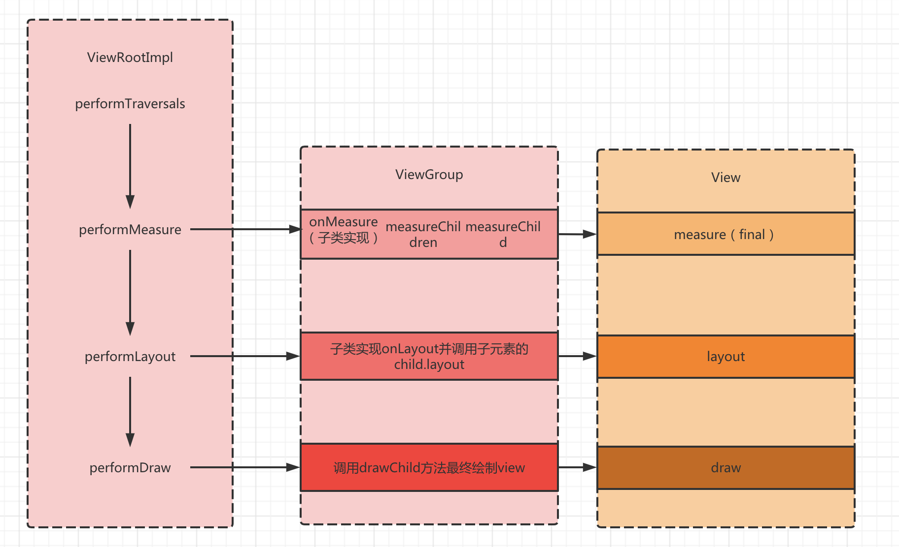

View绘制
/ / 点击 /- View的绘制流程
View的绘制是从ViewRootImpl类的performTraversals方法开始经过measure、layout、draw三个过程将View绘制出来的，measure方法用来测量View的宽高，layout用来确定View再敷容器内的位置，draw绘制View。

performTraversals方法会依次调用perfomrMeasure，performLayout和performDraw，这三个方法完成最上层View的绘制流程，然后会调用onMeasure，onMeasure中会调用对所有子元素的measure方法，这样就完成了一次measure过程，接着子元素会重复父容器的的measure过程。
- MeasureSpec
MeasureSpec可以理解为“测量规则”或“测量标准”。MeasureSpec用一个32位的int值来表示，高2位代表SpecMode（测量模式），低30位代表SpecSize（规格大小）。代码定义这样的：
1 |
|
代码里可以看到MeasureSpec将SpecMode和SpecSize打包成一个int值，这样可以避免过多的内存分配，getMode和getSize方法利用MODE_MASK与操作来得到需要的mode和size值。
SpecMode有三种模式：
- UNSPECIFIED：[ʌnˈspesɪfaɪd]未说明的，没有明确的。父容器对于View没有任何限制，想要多大就给多大。
- EXACTLY：[ɪɡˈzæktli] 明确的。它对应LayoutParams中的match_parent或指定大小值的两种场景。父容器给出了一个确定的范围，如果view设置了具体值这个具体没有超出给定的范围那么就是这个具体值，如果超出了那view的大小就是父容器给定的限制值或者直接就指定限制值也就是match_parent的场景
- AT_MOST:view想要多大就是多大，至到达到指定的值。对应LayoutParams中的wrap_content。
这三个值的设置是站在父容器的角度衡量view的，UNSPECIFIED是父容器没有对view做限制，EXACTLY是父容器给出了一个明确限制值（最大边界）来约束view，AT_MOST则是按照view的想要的来展示，但也有指定值来限定。
对于一个普通的View，它的MeasureSpec是由父容器的MeasureSpec和自身设置的LayoutParam参数来决定的，比如View设置了固定的宽或者高那么它在宽或者高方向上的SpecMode就是EXCATLY，无论它的父容器设置什么测量模式
全文完。